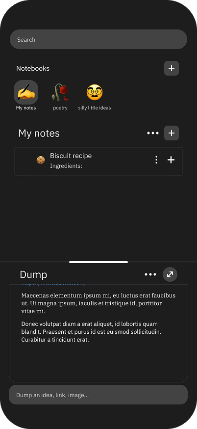
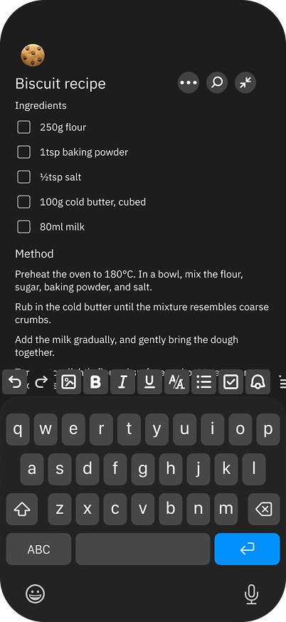
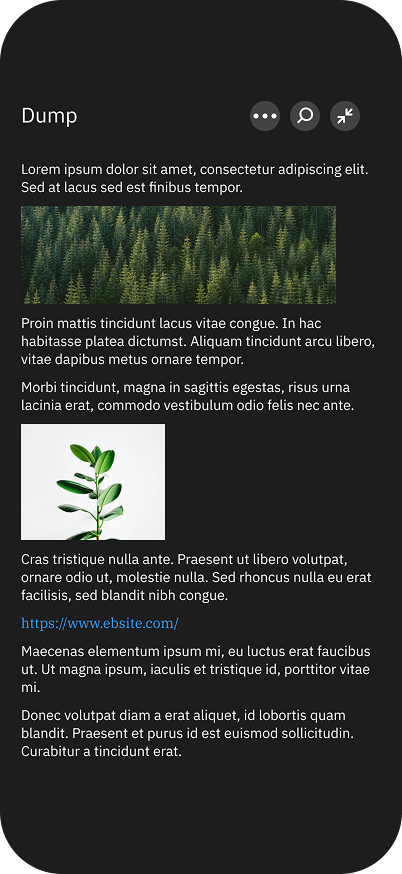
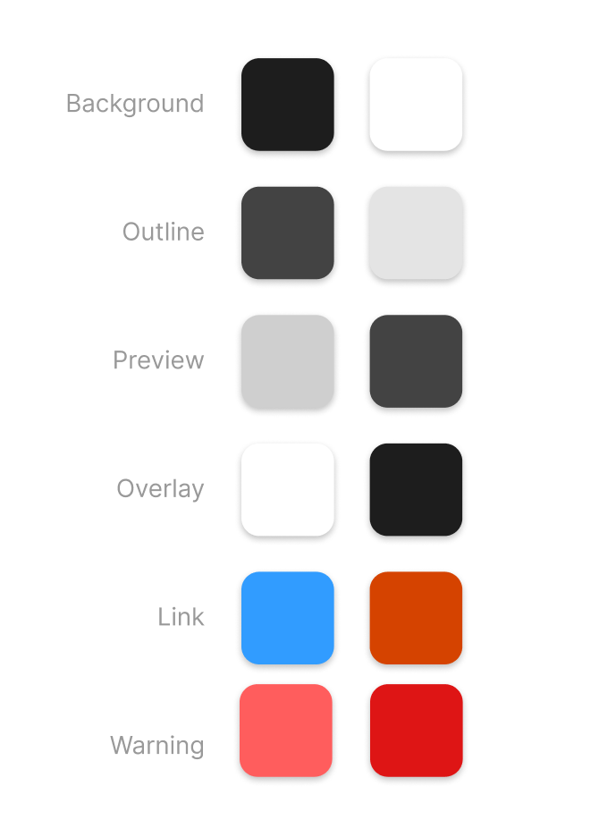
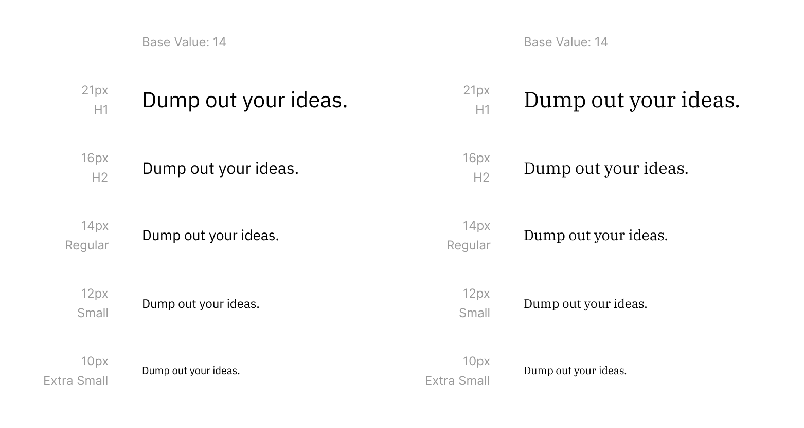
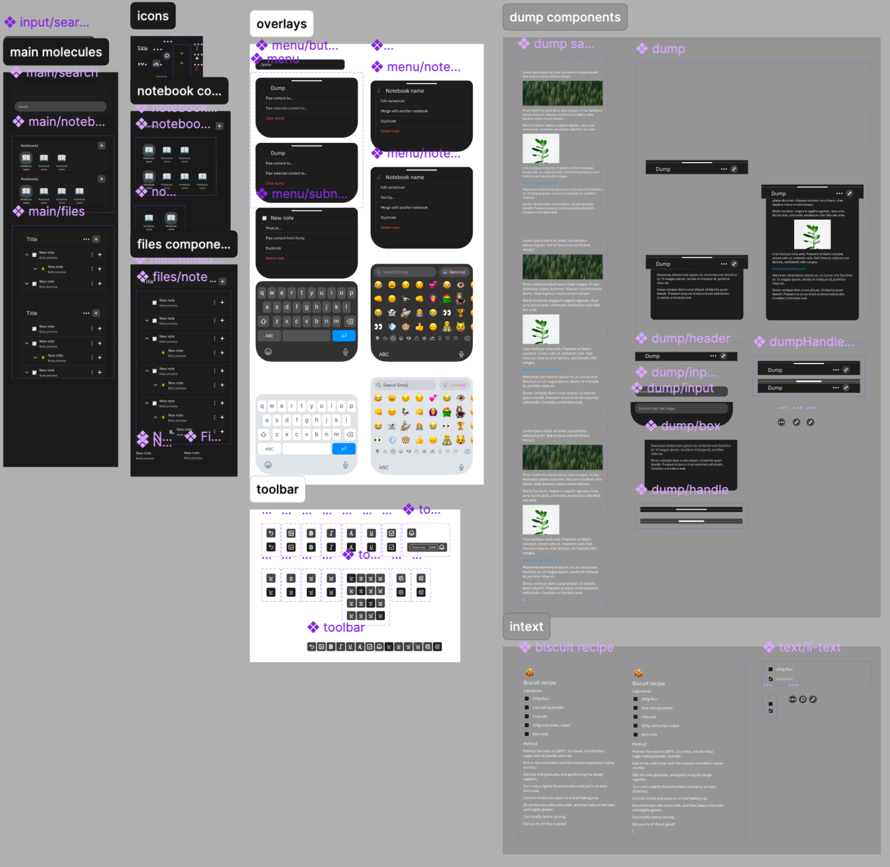
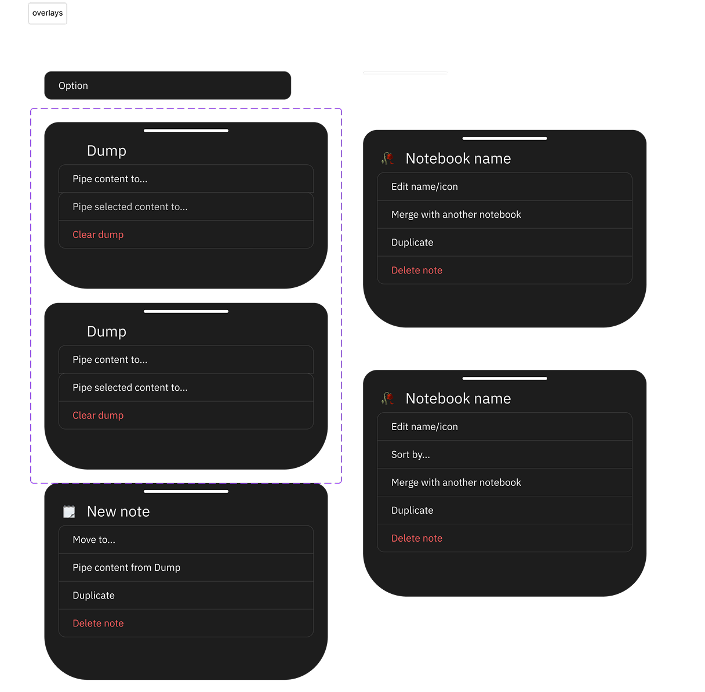
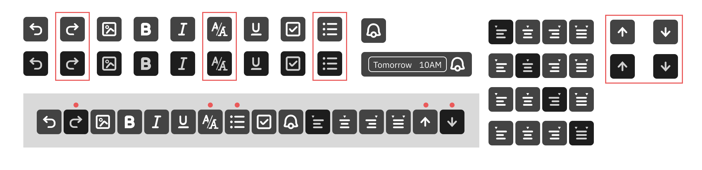

5. High-fi Prototype
Click here to try the prototype



Here are a few frames from the prototype, which you can try on the link above. On the left is the main home screen, and you can see a note in the middle. If you expand the Dump, you see the screen on the right.
Design System


The colours for dark mode (left) and light mode (right), and the text styles used throughout the app. There is a serif toggle function in the text editor, so the serif text is predominantly for that at this point.

I took an atomic approach to building up my components. I started, above, with deciding text styles and colours, and then started to make small iconic components, and you can see how I build them into larger, more complex, interactive elements.

Here, I made a white line with some padding as a handle component and a little button for each option, and built my menu elements up from those two constituents.

And more of the same; here I’m making the text editor toolbar. The icons are all made by me.
I combined all of these components and a few others into the main prototype.
Anyway, testing time.
User testing (round 3)
3 more user tests with the same procedure as before. This time, tasks focused on:
(i) whether users can figure out what the app is/does
(ii) whether the Dump successfully explained itself
(iii) whether users can navigate the note/notebook and the hierarchy of the app
(iv) whether the text editor and the buttons within it were working as the users expected (I wasn’t trying to innovate with the text editor, so it should feel comfortable, not new).
I put the findings into another affinity diagram:

The main findings
- Some users finally grasped the concept quickly.
- Others still struggled to see how it was distinct from (or related to) the notebooks section above it. I would separate the Dump from the rest of the app even further in the final version.
- One user didn’t understand what “pipe content” meant. This is a powerful feature of the Dump, so it might be worth using more plain language for this.
- The block up/down buttons and the serif toggle were new concepts to many users. As they were, the buttons looked overly complex and metaphorical, and one said that this made them “scary”.
- I’ll simplify these icons and try to make their function clearer or, if not, at least less scary.
- Initial impressions of the app created anxiety in users. I deduced that there may be too many thin lines. The app is, admittedly, complicated, so over-complicating it for fresh eyes just with meaningless lines is not ideal.
- I’ll strip the design down to improve readability.
- The app had a silly name and was covered in silly emojis, but something about it felt too serious to users.
- I’ll inject more branding into the app to give it a more clear identity and make it feel less like professional software (great for power users, not for new users).
- The toolbar was missing a bullet point function and (crucially) an undo button.
- I’ll add those.